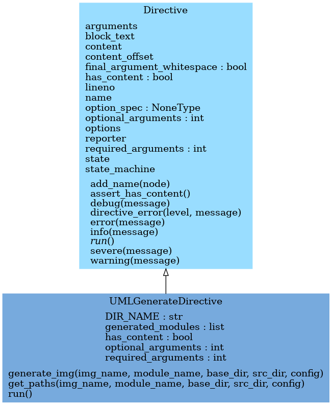

Examples
Some UML diagrams of sphinx-pyreverse.py
Classes diagram
RST code for sphinx-pyreverse class diagram
To generate a pyreverse classes diagram in you rst output simply put the following, replacing the sphinx_pyreverse with the module you want the diagram for.
.. uml:: sphinx_pyreverse
:classes:
The following output also uses pyreverse colorized and ancestors options by specifying the following in your Sphinx conf.py
# sphinx-pyreverse switches
sphinx_pyreverse_colorized = True # colour the graphs
sphinx_pyreverse_all_ancestors = True # give more Sphinx context
sphinx-pyreverse classes output:
With the above rst spec and conf.py config you get:
{kind=link}
Packages diagram
RST code for sphinx-pyreverse package diagram
To generate a high-level packages overview graph simply use the following RST:
.. uml:: sphinx_pyreverse
:packages:
The following output also uses pyreverse colorized and ancestors options by specifying the following in your Sphinx conf.py
# sphinx-pyreverse switches
sphinx_pyreverse_colorized = True # colour the graphs
sphinx_pyreverse_all_ancestors = True # give more Sphinx context
sphinx-pyreverse packages output:
With the above rst spec and conf.py config you get:
{kind=link}